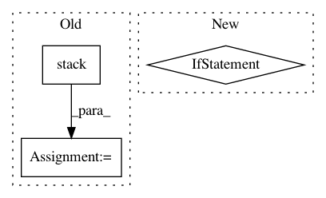

2cfa9aa576ae7544f76e66854edd304690a5822b,paderbox/speech_enhancement/beamformer_wrapper.py,,get_multi_source_bf_vector_from_masks,#,334
Before Change
f"np.max(np.abs(beamforming_vector)) = {value}"
)
else:
beamforming_vector = np.stack(list(
pb.speech_enhancement.get_single_source_bf_vector(
method,
target_psd_matrix=target_psd[:, k, :, :],
noise_psd_matrix=interference_psd[:, k, :, :],
) for k in range(K)
), axis=1)
return beamforming_vector
After Change
assert denominator_matrix_for_atf == denominator_matrix_for_bf, (
denominator_matrix_for_atf, denominator_matrix_for_bf
)
if denominator_matrix_for_ban is not None:
assert denominator_matrix_for_ban == denominator_matrix_for_bf, (
denominator_matrix_for_ban, denominator_matrix_for_bf
)
beamforming_vector = list()
for k in range(K - 1):
if denominator_matrix_for_bf is None:
denominator_matrix = None
In pattern: SUPERPATTERN
Frequency: 5
Non-data size: 3
Instances
Project Name: fgnt/pb_bss
Commit Name: 2cfa9aa576ae7544f76e66854edd304690a5822b
Time: 2019-08-08
Author: mail@lukas-drude.de
File Name: paderbox/speech_enhancement/beamformer_wrapper.py
Class Name:
Method Name: get_multi_source_bf_vector_from_masks
Project Name: tensorflow/tpu
Commit Name: b6437e4dd115c5b290eb84b0620610b497293609
Time: 2020-05-12
Author: pengchong@google.com
File Name: models/official/detection/serving/inputs.py
Class Name:
Method Name: raw_image_tensor_input
Project Name: eriklindernoren/PyTorch-YOLOv3
Commit Name: b591a7aecce5b8de42a0dd7bba62780675d34fce
Time: 2019-04-30
Author: eriklindernoren@live.se
File Name: utils/datasets.py
Class Name: ListDataset
Method Name: collate_fn
Project Name: dhlab-epfl/dhSegment
Commit Name: 3b6224bc88d9ae94837225d9aed8c41789c8ebda
Time: 2019-07-18
Author: sofia.oliveiraares@epfl.ch
File Name: exps/cbad/utils.py
Class Name:
Method Name: cbad_set_generator
Project Name: dask/dask-image
Commit Name: cbbcea8795e8da754a5b3ffb1a08ef66afd84eef
Time: 2018-09-02
Author: jakirkham@gmail.com
File Name: dask_image/ndmeasure/_utils.py
Class Name:
Method Name: _ravel_shape_indices